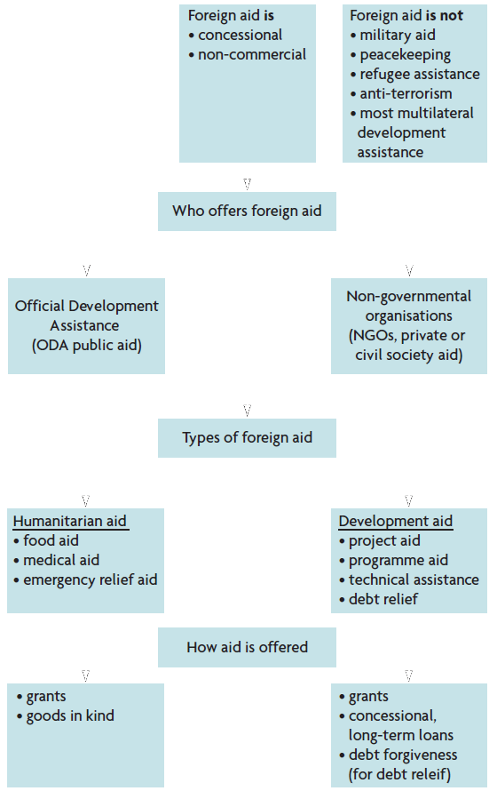

Foreign aid is defined as the transfer of funds or goods and services to developing countries with the main objective to bring about improvements in their economic, social, or political conditions.
Such transfers must be concessional and non-commercial.
Foreign aid is:
concessional
non-commercial
Foreign aid is not:
military aid
peacekeeping
refugee assistance
anti-terrorism
most multilateral development assistance
Humanitarian aid
Foreign aid extended in regions where there are emergencies caused by violent conflicts or natural disasters such as floods, earthquakes, and tsunamis, intended to save lives, ensure access to basic necessities such as food, water, shelter, and health care, and provide assistance with reconstruction.
food aid
medical aid
emergency relief aid
How humanitarian aid is offered
grants
goods in kind
Development aid
Foreign aid intended to help economically less developed countries with their growth and development efforts.
project aid
programme aid
technical assistance
debt relief
How development aid is offered
grants
concessional, long-term loans
debt forgiveness (for debt relief)
Humanitarian aid and development aid are offered by both ODA and NGOs.
Whenever it involves financial inflows, these enter as credits in the balance of payments, thus bringing in foreign exchange and helping countries offset possible deficits in their trade balance.
Official Development Assistance
The most important part of foreign aid, referring to foreign aid that is offered by countries or by international organisations composed of a number of countries (it does not include aid offered by non-governmental organisations).
ODA funds reach developing countries in three ways:
through bilateral aid
through multilateral aid
through NGOs
Donor countries:
most of the members of OECD
some members of OPEC
some eastern European countries
Donor motives for providing ODA
Political and strategic motives
Economic motives
Humanitarian and moral motives
Arguments in favour of ODA
Aid and the poverty cycle
Aid and provision of basic services
Aid and improved income distribution
Aid and economic growth
Aid and the Sustainable Development Goals (SDGs)
Aid, the debt trap, and debt relief
Factors that limit the effectiveness of ODA
Tied aid
Conditional aid (conditionality)
Aid volatility and unpredictability
Uncoordinated donors
Aid may substitute for rather than supplement domestic resources
Aid may not reach those most in need
Aid may be associated with corruption
The quantity of aid and poverty alleviation
Non-governmental organisations
Non-profit organisations that provide a very wide range of services and humanitarian functions; in developing countries they provide foreign aid, all of which takes the form of grants (there are no loans involved).
They are involved with an enormous range of activities, including emergency assistance, promotion of sustainable development, poverty alleviation, protection of child health, provision of technical ssistance, and many more.
Well-known international NGOs (INGOs):
Amnesty International
Greenpeace
Oxfam
Save the Children
World Wide Fund for Nature / World Wildlife Fund
Advantages of NGO
Strong anti-poverty orientation of activities
Working closely with project beneficiaries
Contributing to democratisation, advocacy and raising public awareness and support
Offering expertise and advice
Ability to be innovative in pursuit of solutions
Enjoying the trust of beneficiaries
Criticisms of NGOs
Small size and weakness of many NGOs
Possible loss of independence due to growing dependence on governments and aid agencies for funding
NGOs may attract the best qualified personnel away from government
Challenge to state authority

Debt relief
Refers to the cancellation or forgiveness of all or a portion of a country's debt (Chapter 19.2).
The Heavily Indebted Poor Countries (HIPC) Initiative
1996: the Heavily Indebted Poor Countries (HIPC) Initiative
2005: the Multilateral Debt Relief Initiative (MDRI)
Critisms of the HICP Initiative
The rate of delivery of funds remains low.
The programme takes effect too slowly.
Some measures that are imposed as conditions for a country to qualify are too severe.
There are many other countries that are highly indebted but which have not been included in the HIPC Initiative